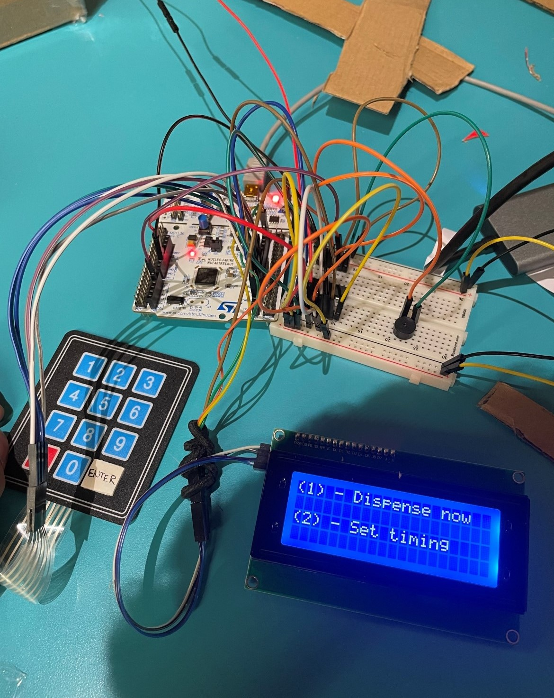
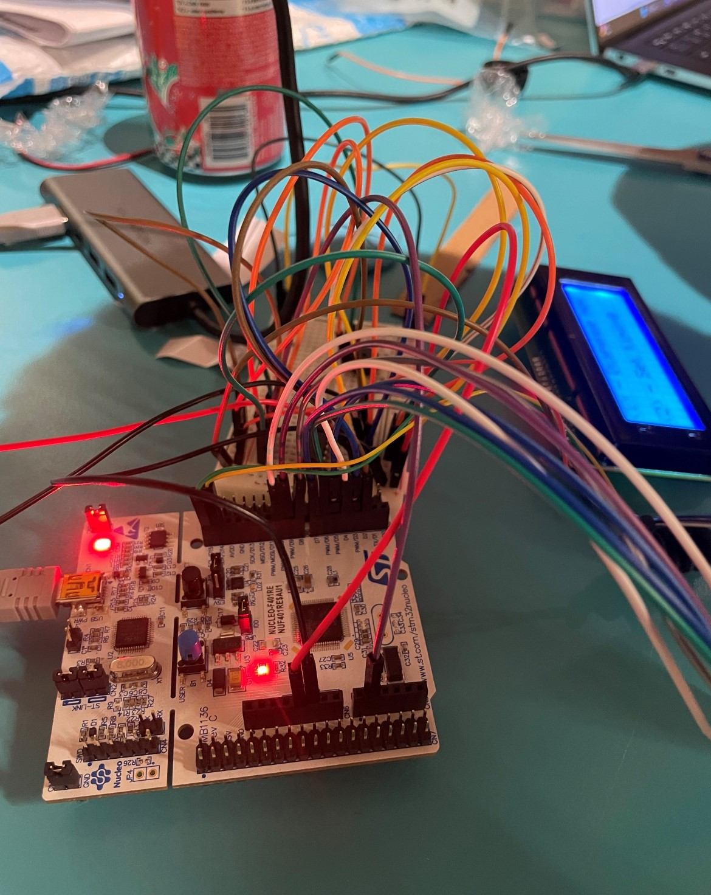
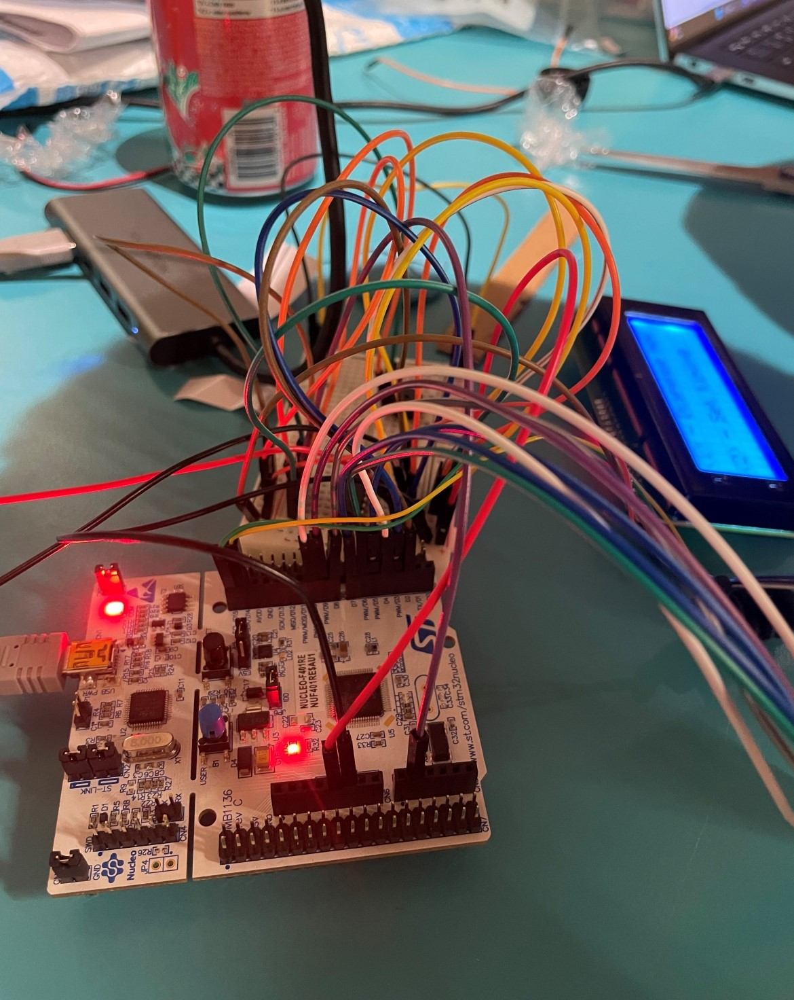
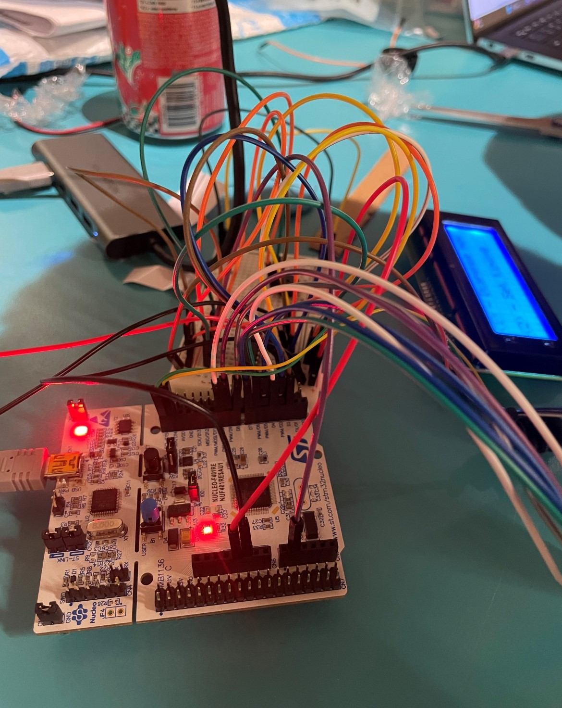
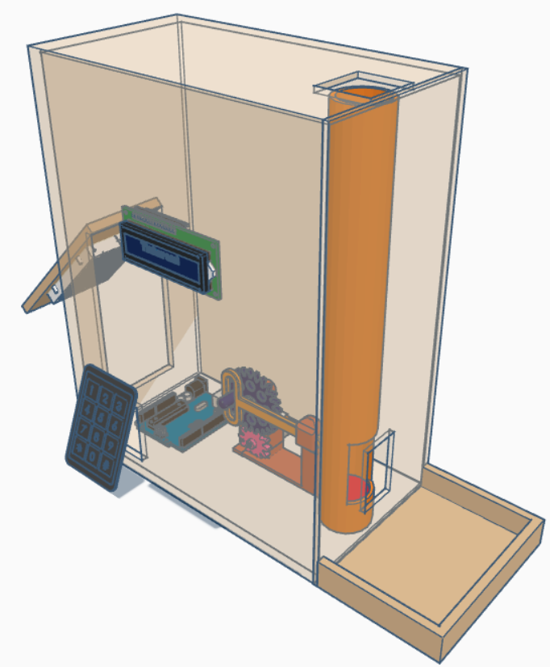
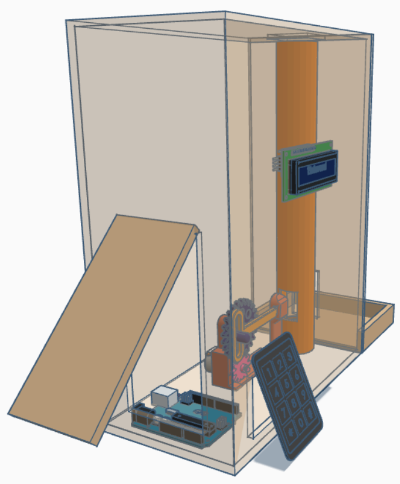
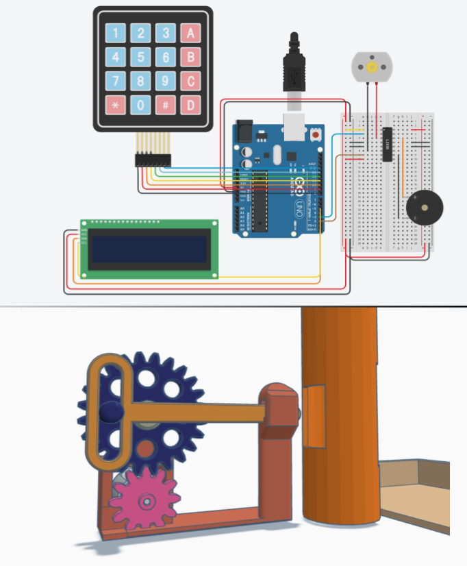

MediMinder Pro
Source code
As part of a self-led course project at the University of Waterloo, I built an automated medication dispenser in collaboration with one of my peers, engineered for older adults with cognitive decline.
It was built around the STM32F401RE microcontroller, with a keypad and LCD user interface. Programmed in C through STMicroelectronic's STM32CubeIDE.

 


3D Model & Schematics



Implementation Videos
Documentation
Design Document